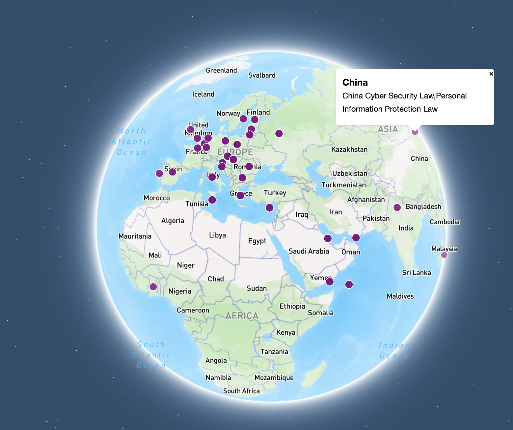

elizabeth singer
table of contents
1 – systems
the money bail system in the united states of america
The inceptive purpose of the money bail system in the United States of America was to make sure people show up to court. Research has since shown that money bail is not needed to achieve this. The actual effect is that this system perpetuates the incarceration of people based on how much money they have. While there are some states that have bail reforms, the money bail system is the reality in the majority of the United States of America. After a person is arrested, they can either pay (an intentionally large amount of money) for cash bail to leave jail or they must stay in jail. If they have the money to pay cash bail, they can decide if they want to stay in jail or pay that large amount of money to leave. If they do not have the money to pay cash bail, they either must stay in jail while they wait for their trial (which can be years), or they can pay a smaller amount of money to a bail bonds company (a fee they would not get back even if they show up to trial and are not charged), or they can plead guilty and give up the right to a trial. These choices are influenced by if a family can afford cash bail or to pay a bail bondsman. If the family pays bail or a bail bondsman, a poor family may be significantly impacted by paying this, while a wealthy family may not at all. The money given to a bail bondsman will not be given back, even if no charges are ever filed. The money bail system is unjust to poor people and the for-profit bail industry profits off of this.
Most people in jail in the United States have not been convicted of a crime, but instead are in jail because they could not afford to pay cash bail. This does not only make money for the for-profit bail industry, but all the companies that profit off of keeping jails and prisons full such as those that make the clothes and food profit from the money bail system as well.
The cost of all this? --the livelihoods and ability to care for their families of those incarcerated and the billions the United States spends to keep these people incarcerated.
The stock in this system is based on the actual function of the money bail system (keeping jails and prisons full) rather than the original intent of the money bail system when it was first designed (making sure people show up to court).
Therefore, the stock is people in jail. Most people in jail have not been convicted of a crime. They are in jail awaiting trial because they could not afford to pay the bail amount set for their release. (The median bail amount for felonies is $10,000, which is 8 months income for the average person in jail because they could not afford bail).
The elements of this system are people arrested, jails, judges, courthouses, money, bail bondsmen, the law / statute / federal rules of criminal procedure, police (arresting officers), lawyers, families, wealth, jobs (people may lose their jobs if they have to stay in jail, and then they can no longer pay court fees etc), and investors in bail bonds companies.
The leverage points are: how much money someone and their family has, if their family can afford to pay bail, if their family can afford to pay a bail bondsman fee, if they are able to leave jail and return home and return to work, if they can afford to stay in jail for a long time and miss out on wages and caring for their families, if they can afford a lawyer, the amount their bail is placed at.
Impactful leverage points include taking into account the situation of each individual person when setting bail, abolishing cash bail all together, replacing money bail with systems, breaking up the massive for-profit bail bond industry, community funds to bail out community members, legal assistance to those incarcerated because they couldn't afford bail, house-arrest, text reminders of court dates, decriminalizing minor infractions, legislation to protect those with mental illness from arrest, legislation to protect people from being arrested for not having a house, eliminating bail for nonviolent offenses, setting a cap on bail for nonviolent offenses, and requiring judges to take each individual's financial situation into account when setting bail.
In creating an effective intervention in the form of bail reform, it is important that judges do not rely too much on "risk assessment tools'' as these reflect bias on the basis of race, class, and gender. Any reform that allows judges to deny release on the basis of the "risk" of that person is likely to allow judges to make biased decisions. For this reason, allowing too high levels of judicial discretion is dangerous. Judges may continue to set too-high bail if given too much discretion. Bail reform should also not replace pre-trial detention with too much supervision as this may have negative impacts to individuals communities and careers (restricting the freedom of these individuals who have not been convicted of a crime.) It is also important that useful data is collected and shared publicly so communities can see the positive impact of bail reform and so misinformation is easily disproved. The arrested individual should also be given the right to an attorney during the bail hearing. Finally, they should be given text and email reminders of court dates.
The money bail system is part of a larger feedback loop that works with over-policing to keep poor people poor. That is, poor areas are over-policed and so people living in these areas are more likely to be arrested. Whether or not they are guilty or even ever charged, those that are arrested will have to either pay bail bondsman fee or pay money bail if they do not want to stay in jail for a long time (and likely lose their job and not be able to care for their families etc). Staying in jail or paying these fees will have much more damaging effects on poor families, making them even more poor. This feedback loop continues because poor communities are over-policed, and it continues.
As bail bonds companies and their investors make more money off of this system, they grow in power and resources. As their power and resources grow, they are able to further lobby politicians to keep the money bail system the status quo, despite that it is unjust. This is the reason for the resilience of the money bail system, despite increasing public awareness and outrage about the injustice of this system.
The hierarchy is that the money bail system is a sub-system that plays a key role in the larger incarceration system in the United States of America, as it is responsible for a continually increasing number of people incarcerated in the United States of America, overcrowding jails and costing the country more and more money to keep them there.


2 – lock-in, authorship
lock-in, the money bail system continued
The money bail system creates a system where wealthier people are less likely to be incarcerated before trial than someone who is poorer and accused of the same crime. This system not only perpetuates inequality, but also contributes to that the incarceration rate and number of people in prison has climbed dramatically since the war on drugs, even though the rate of crime has been declining. Housing the ~500,000 people who are incarcerated pre-trial because they can not afford bail costs the United States $9 billion per year. Most of these people were accused of minor, nonviolent offenses.
So, if the money bail system is unjust and expensive for the United States, why does it continue? Lock-in is the phenomenon in which changing a specific software design is difficult because many other programs were designed to be dependent on it. While the money bail system is not technical, this phenomenon is still relevant. The money bail system is difficult to change because there are many independent groups with their own economic incentives to keep jails and prisons full.
These systems have historical roots. After slavery was abolished, southern states did not want to lose their free labor. So, they criminalized minor offenses in order to arrest those who had been freed so that they could be forced to work when they could not pay the fines for being arrested. This led to convict leasing, a system of forced labor to provide prisoner labor to private parties. While convict leasing as in the post-slavery era does not exist today, incarcerated Americans still make good for American companies and get paid nearly nothing for their labor. There are also still private parties with incentive to lobby politicians to criminalize minor offenses beyond the many corporations that benefit from prisoner labor including private prison contractors, and those that sell clothes, food, and other equipment to jails and prisons.
In thinking about the future of the money bail system, flexibility is crucial for judges to be able to consider every person and their family’s situation individually. While locked-in guidelines for bail amounts based on what they are accused of could prevent bias on the basis of race or gender, it would prevent the judge from setting a lower amount for poorer individuals or for those who are clearly not a risk and are needed at home by their families. A better way to change the system would be to move away from money bail all together, because as ling as there are very rich people and very poor people in America, determining whether or not someone is detained pretrial based on how much money they can spend on bail, will never be fair.
The program author - Rules should exist that prevent bias and unfairness on the basis of race, class, gender, and sexuality. However, rules should still allow judges flexibility based on individual situations.
The masses author - The masses should have an opportunity to impact policy more (not less) than lobbyists employed by comparatively smaller private parties with economic interests
my authorship philosophy
In terms of creating content, Authorship Models that resonate with me include the Yes Men, Youtube poop, Glitch Art, and Collage. The yes men raise awareness about problematic practices by corporations by using their privileges as white men to get themselves opportunities to speak on behalf of these corporations and do and say silly things or things to call out those problematic practices. Youtube poop mashes pre-existing media with subcultural significance to create new meaning. Glitch art uses digital glitches for aesthetic or activist purposes by manipulating data or software to break. Collage is making at from different forms to make something new. I like when the masses take the opportunity to hijack something that already exists that is a tool for capitalism. And when these hijacks begin to be used by capitalism, they should be hijacked. I think this allows the masses to gain power over something being used over them.
zine group project
click here to view zine3 – politics
data collection
data type 1: interview - 15 quotes from 12 interactive interviews with users (ages 18-28) while engaging with hard paywalls:
- The first thing I see is this subscribe for just $1, and I do not want to subscribe so I am going to see if I can get rid of this.
- It was too much work because I did not have an account and it did not seem worth it to log in to make an account for something.
- I went back to the article to see what was there, but it was just behind a paywall, so I gave up.
- I did not know what was happening, I was confused. It disoriented me.
- I saw it said a dollar to subscribe so i just immediately left the website without staying.
- I tried scrolling and saw that it did not work so I will click go back to home page because I do not want to subscribe for $1.
- Not a member... back to home page... and now I am not sure if I am at the article, you sent so it looks like I ended up at a different article... let me go back and try again... I cannot see it anymore.
- I am frustrated now. I hit log in just to see what would happen.
- I was interested in seeing what the article was and I could not see it with the paywall so I used a paywall diverter which is something I always do which I do when I want to get around a pay wall.
- I will refresh and hit x right before the ad appears to see if I can load the page right before the pay wall goes up.
- Why do I have to pay for news?
- I am sad I could not read the article.
- I wish it could be free.
- How do I get out of here?
- I noticed it had a pay wall and then I copied the link from the address bar and pasted it into archive.is to see if it was cached. It was so I clicked on the cached link in archive.is so now I will read the article.
data type 2: level of trust and mood ratings - 12 users (ages 18-28) rated their level of trust before and after engaging with hard paywalls:
mood:
| before | after |
|---|---|
| 4 | 3 |
| 4 | 3 |
| 4 | 3 |
| 5 | 4 |
| 5 | 3 |
| 2 | 2 |
| 3 | 3 |
| 3 | 3 |
| 3 | 2 |
| 3 | 2 |
| 2 | 2 |
| 3 | 3 |
level of trust:
| before | after |
|---|---|
| 4 | 4 |
| 3 | 3 |
| 4 | 3 |
| 3 | 4 |
| 4 | 4 |
| 3 | 2 |
| 3 | 3 |
| 3 | 3 |
| 2 | 2 |
| 4 | 2 |
| 3 | 3 |
| 3 | 3 |
data type 3: survey - 12 users (ages 18-28) filled out a survey. This question asked what users typically do when they encounter hard paywalls if they have a strategy to get around them.
| strategies? |
|---|
| if I’m on facebook ill click. on it then import it in a website and they’ll just let me read it |
| Google it and see if theres a free version |
| Find a free version |
| find a different article about the same topic |
| scroll through the comments and find a link to a free version |
| way back machine |
| If I’m on twitter and theres a lot of replies ill look through the comments to see if theres a free version |
| no strategy |
| Google the name of the author and the article and see if its posted anywhere else |
| no |
| I don't |
| 12ft.io lets you bypass paywalls |
data type 4: reddit comments in response to the Boston Globe eliminating their paywall loophole
Data Type 5: 13 news websites, their type, and thei paywall model
| american news sites | type | paywall model |
|---|---|---|
| Los Angeles Times | newspaper | metered paywall |
| New York Times | newspaper | metered paywall |
| Washington Post | newspaper | metered paywall |
| New York Post | tabloid newspaper | free |
| Wall Street Journal | business newspaper | hard paywall |
| Boston Globe | newspaper | metered paywall |
| Chicago Tribune | newspaper | metered paywall |
| Detroit Free Press | newspaper | free |
| Miami Herald | newspaper | metered paywall |
| The Atlantic | newspaper/magazine | free |
| The New Yorker | newspaper/nagazine | metered paywall |
| Newsweek | newspaper/magazine | free |
| Time Magazine | newspaper/magazine | free |
data manifesto:
My favorite experiences with data were as a researcher. I make things and try to make them as usable as possible. I enjoy doing user studies, usability studies, surveys, interviews (taking notes and recording), system usability scales, interactive contextual inquiry, collecting user journals, and having users participate in an activity that produces something unique like a bull’s eye diagram or an importance/difficulty matrix.
However, I always start with past research to see what has been done to see how I can leverage those methods to make may study more robust, or to see how I can build on pass research. I wish academic research was not frequently paywalled, and I wish full datasets (with privacy concerns taken into account) were more commonly available with publications.
These data show user reactions to engaging with paywalls on news websites, and the prevalence of such paywalls in news websites. I had planned on finding data about the reasons why paywalls are used, such as revenue data, but I had a hard time finding it. While finding the cost of each news website’s paywall was easy, finding original data sets (instead of data summaries) about revenue from using such paywalls was more difficult, so I did not include them. Paywalls indeed impacted my ability to collect data as many news sites and scholarly articles had paywalls in order for me to read them in my research.
A statistically significant fraction of the users expressed a downward change in their mood because of interacting with a hard pay wall. A statistically significant fraction of users expressed a detrimental change in their level of trust in the news media in general and in the specific website, due to such paywalls. These data suggest that the use of such patterns may have lasting negative impacts on user experience and as a result negatively impact the industry in general. For example, I read multiple publications that concluded that most Americans only read headlines of news articles, and rarely read the whole article.
The accessibility of news shapes politics in the United States of America. The data about such politics absolutely has politics —these data could have been collected to show paywalls as the solution to diminishing advertising revenue and print subscriptions, or these data could have been collected to show that hard paywalls diminish the number of readers and the accessibility of internet and news. Data could have been collected to compare paid reputable news papers with free fake news. Data could have also been collected to track the newspaper websites that ask for donations and their reasons why such as The Guardians favor for a “free and accessible internet” and “information equality”.
The user data focuses on the user, while the survey of many news paper websites casts a much wider net.
3 sketch prototypes:
click here to experience the interactive map of data privacy laws represented in mapbox
Waiting on Github to approve my student status so I can create a page.
and here is a screenshot of data privacy laws represented in mapbox:
and here is a screenshot of user quotes about smart home iot privacy represented in a 3-d scan of my home:

click here to experience data about dark patterns represented in an animated video
and here is a screenshot of data about dark patterns represented in an animated video:
method manifesto:
Animation and Rotoscoping looks cool and was fun to do, though it was extremely time consuming. You can do anything in animation. While I prefer the look of pen and paper scanned in, I found that procreate is faster and lets me create more frames in less time.
Map-box was perfect for representing the global nature of my dataset about global data privacy laws. Using map box enabled me to allow the user to click on different countries and explore the world for themself and experience the data in a global way literally going around the world to discover the data.
I chose not to use grasshopper, glitch art, or collage. I found grasshopper to be difficult to use and time consuming. I chose not to work with glitch art because I am not looking at anything so analogous to a glitch that I would want to on the nose glitch art. While I think collages would suit these projects well, and like animation, collages can be made to represent anything, I chose to try map box and blender for this assignment because I felt that building a map and building a 3d model of a house more specifically fit my topics of global legislation and in-home devices. (And I wanted to try my hand at animation.
Using Blender and Rhino on a 3D Scan resonated with my purpose as I was asking about devices in the home, I put the information in my home. The intimacy of it actually being a real home worked with my discussion of privacy, and the weirdness of the OBJ file works to get at a glitchy creepy feeling which I think is perfect for representing smart home devices and privacy concerns. I think this effectively merged the digital with privacy and homes, though it was also pretty difficult to work with.